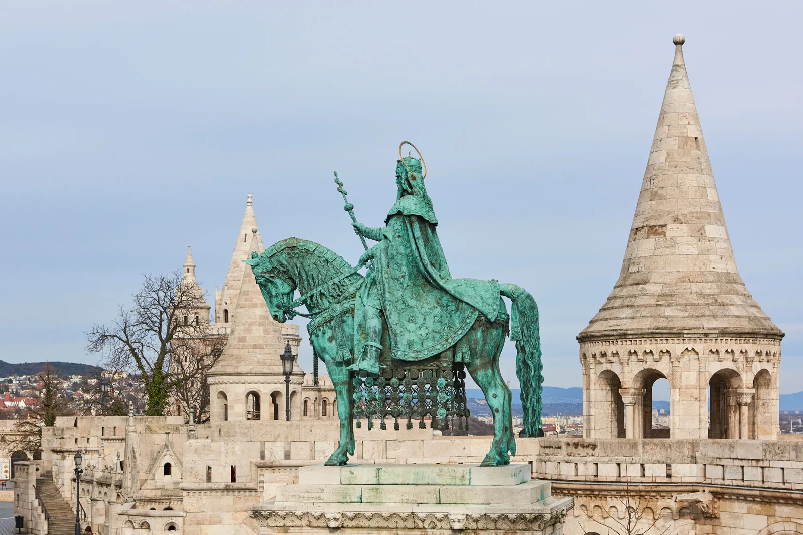
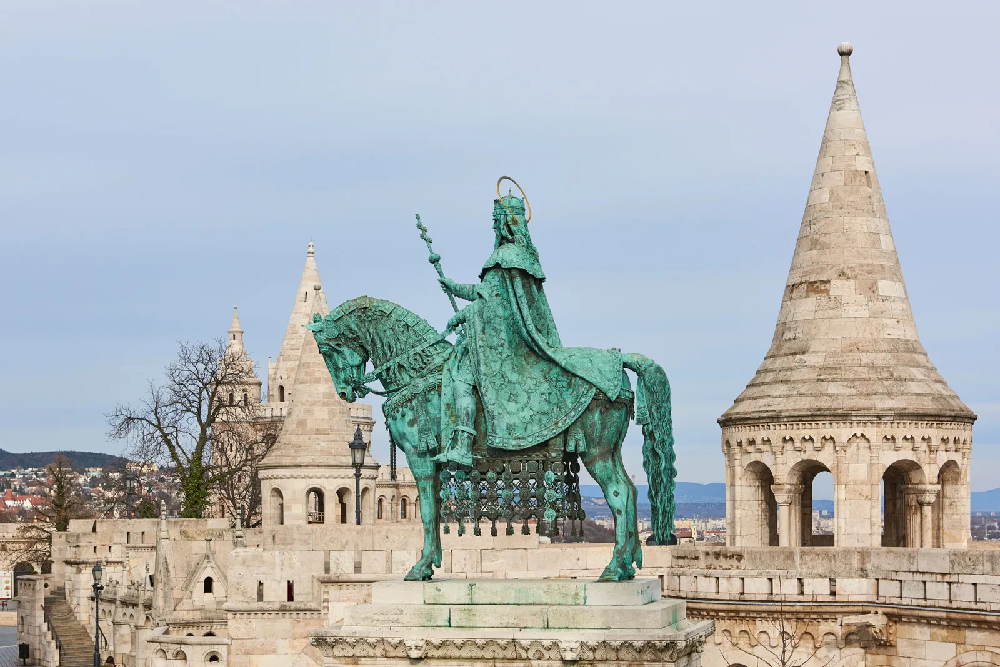
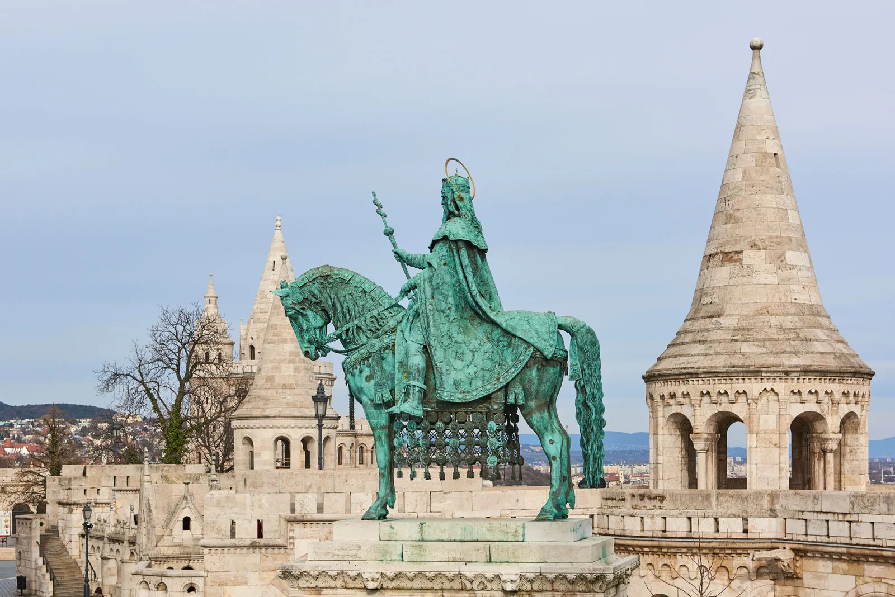
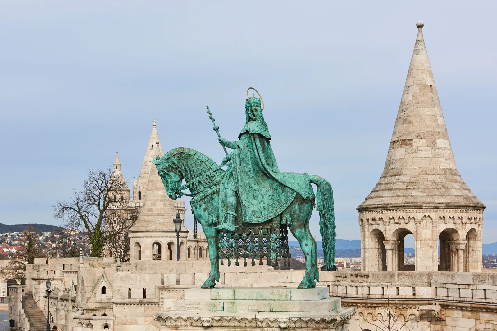
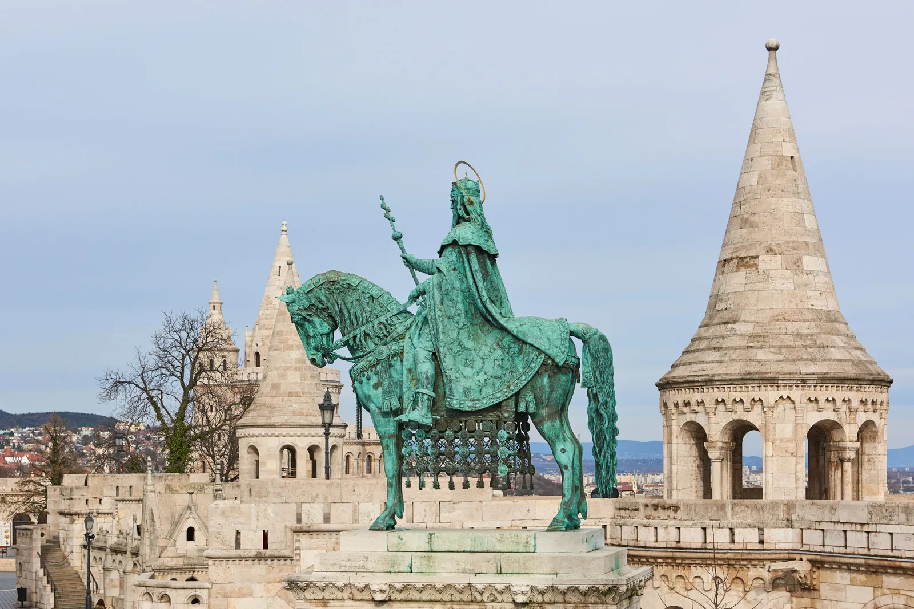

×
Home
Tokyo
Lofoten
Maui
Barcelona
Cinque Terre
Budapest, Hungary
Menu
Postcard Format
Fun Facts
Budapest has the world’s largest thermal bath complex, the Széchenyi Thermal Bath.
The Hungarian Parliament Building is the third-largest in the world, with nearly 700 rooms.
Buda and Pest were two separate cities until 1873 when they merged to form Budapest.
The Liberty Statue on Gellért Hill is one of the city’s most iconic landmarks.
Budapest's Metro Line 1 is the second-oldest subway line in the world and a UNESCO World Heritage Site.


 


